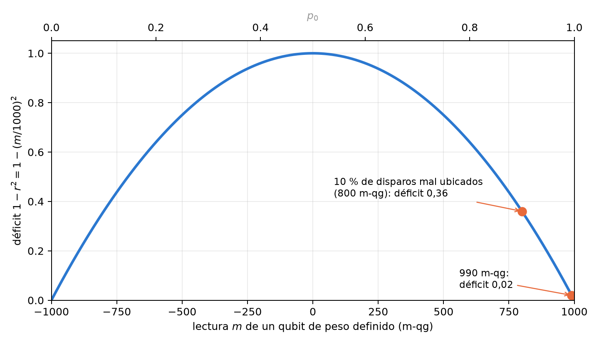
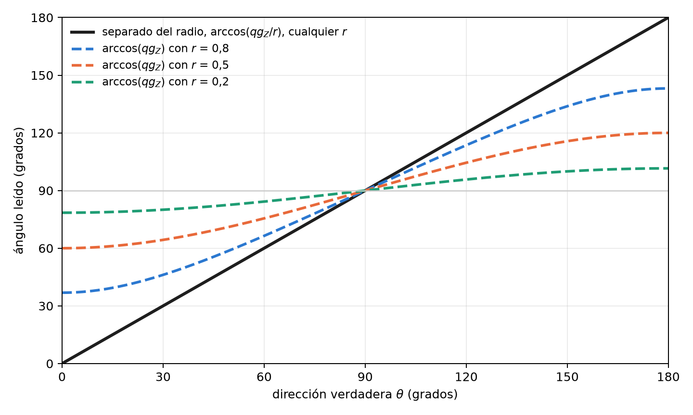
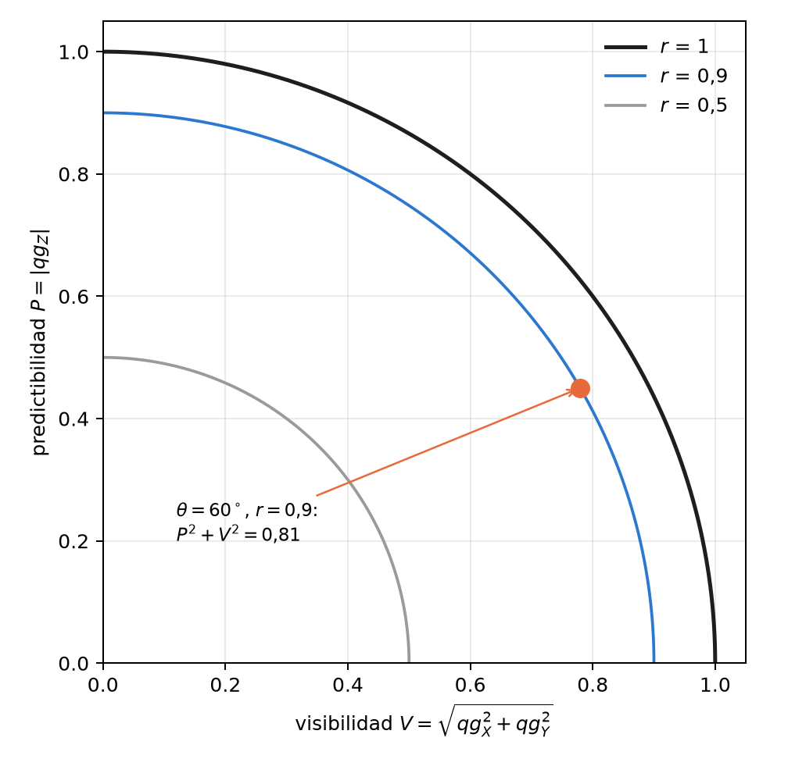

5 El radio local de Bloch como medida de pureza y entrelazamiento
Día de análisis y actualización: 22 de noviembre de 2026
La Parte I trató al qubit como un punto de la superficie de la esfera: un estado puro, una probabilidad \(p_0\) y sus cuatro lecturas. Un qubit que forma parte de un registro casi nunca es puro: está mezclado por el ruido o por su entrelazamiento con los demás, y se ubica dentro de la esfera. Este capítulo agrega a la base del capítulo 1 la cantidad que falta, el radio local \(r\), y muestra que la ecuación de probabilidad sigue valiendo con un solo cambio: el sesgo polar ya no es \(\cos\theta\) sino \(r\cos\theta\). Del radio salen una medida de entrelazamiento, una forma de separar la dirección del estado de su pureza y la dualidad onda–partícula, todo leído en unidades qg.
5.1 La ecuación de probabilidad con radio
Para un qubit en un estado mixto, su vector de Bloch \((qg_X,qg_Y,qg_Z)\) tiene longitud \(r\le1\), y la regla de Born en la base \(Z\) se escribe
\[ p_0=\frac{1+qg_Z}{2}=\frac{1+r\cos\theta}{2}. \]
Es la ecuación de probabilidad del capítulo 1 con el radio adentro: las lecturas \(qg_Z=2p_0-1\) y \(m=2000\,p_0-1000\) m-qg no cambian, pero ya no determinan el ángulo, porque un mismo \(p_0\) puede venir de un estado puro inclinado o de uno mezclado más cerca del polo. Cada eje tiene su propia probabilidad, \(p_0^{(a)}\) en la base \(a\in\{X,Y,Z\}\), y el radio cuadrado es la suma de las tres lecturas al cuadrado (§97):
\[ r^2=qg_X^2+qg_Y^2+qg_Z^2=\frac{m_X^2+m_Y^2+m_Z^2}{10^6}=2\operatorname{Tr}\rho^2-1 . \]
El radio cuadrado es lineal en la pureza, \(r^2=2\operatorname{Tr}\rho^2-1\) (el radio es su raíz): vale 1 en la superficie (estado puro) y 0 en el centro (estado máximamente mezclado). La esfera de radio \(r\) tiene área \(4\pi r^2\), y el déficit de superficie \(4\pi(1-r^2)\) es el área que el qubit perdió; la biblioteca trabaja con \(1-r^2\), que lleva la misma información.
5.2 El déficit como medida de entrelazamiento
Si el registro completo está en un estado puro, todo lo que le falta de radio a un qubit se debe a su entrelazamiento con el resto. En ese caso \(1-r_q^2=4\det\rho_q\) es el one-tangle del qubit \(q\), que para dos qubits es la concurrencia al cuadrado (Coffman et al. 2000), y su promedio sobre los qubits es el entrelazamiento global de Meyer y Wallach (2002):
\[ Q=\frac1n\sum_q\left(1-r_q^2\right). \]
Dos ejemplos fijan la escala. En el estado de Bell cada qubit está en el centro de su esfera, \(r=0\), y \(Q=1\). En el estado W de 3 qubits cada uno tiene \(r^2=1/9\) y \(Q=0{,}889\). Si el estado global es mixto, el déficit mezcla entrelazamiento y ruido y no puede separarlos: el radio mide entrelazamiento solo cuando se sabe, o se garantiza, que el registro es puro. Leer \(r^2\) cuesta tres configuraciones de medición para todo el registro (todos los qubits en \(X\), en \(Y\) y en \(Z\)), no tres por qubit.
5.3 El radio ante las compuertas y los algoritmos
Una compuerta de un qubit rota la esfera y conserva el radio, también para qubits mixtos. SWAP intercambia los radios de dos qubits. CNOT, CZ, iSWAP, Toffoli y Fredkin pueden llevar un qubit de una entrada producto al centro (\(r=0\), desde entradas del tipo \(|{+}0\rangle\) o \(|{+}{+}\rangle\)) y también devolverlo a la superficie; sobre estados de la base computacional no crean déficit, porque actúan como permutaciones clásicas (§97). En los algoritmos, el radio de los qubits de lectura dice dónde está la respuesta:
| algoritmo | \(r^2\) de los qubits de lectura | lectura |
|---|---|---|
| Bernstein–Vazirani, Deutsch–Jozsa constante | 1 en cada qubit | salida producto: el \(qg_Z\) local es toda la respuesta |
| Simon (\(s=110\)) | 0 en cada qubit | la respuesta está entera en las correlaciones |
| Grover (\(n=5\)), \(k=0\ldots4\) | \(1\to0{,}82\to0{,}66\to0{,}84\to0{,}998\) | entrelaza y desentrelaza; vuelve a 1 en el óptimo |
| conteo (\(N=16\), \(M=3\)) | \((1-2M/N)^2=0{,}39\) | déficit \(4(M/N)(1-M/N)=0{,}61\) |
| QAOA, anillo de 4, \(p=1\) | 0,25 | el costo vive en \(ZZ\) |
5.4 Peso definido: el radio desde la base Z
En un estado de peso de Hamming definido todos los \(qg_X\) y \(qg_Y\) locales son cero, de modo que \(r_q=|qg_Z^{(q)}|\) y el radio se lee solo con disparos en \(Z\). Con la ecuación de probabilidad, el déficit queda
\[ 1-r^2=1-\left(\frac{m}{1000}\right)^2=4\,p_0\,(1-p_0): \]
cuatro veces la varianza binomial del resultado, la misma \(p_0(1-p_0)\) que gobierna el ruido de disparo del capítulo 1. La Figura 5.1 la muestra sobre la escala del mili-qang. El déficit es nulo en los polos, máximo en el ecuador y muy sensible cerca de un polo: un qubit a 990 m-qg tiene déficit 0,02, y uno a 800 m-qg, que es lo que da un 10 % de disparos mal ubicados sobre un estado de la base, ya marca 0,36.

Este es el punto en que el filtro de simetría (capítulos 20–21) y el radio se encuentran. Bajo T1 igual en todos los qubits, el estado filtrado es el estado puro sin ruido, así que el déficit filtrado es una medida exacta de entrelazamiento. Las predicciones se registraron antes de correr (§98); sobre circuitos RBS de 4 y 6 qubits:
| ruido | error exacto del déficit, con qang | sin qang | MSE menor con el filtro |
|---|---|---|---|
| T1 igual | \(<3\cdot10^{-15}\) | 0,061–0,370 | 30 de 30 |
| T1 desigual | 0,013–0,045 | 0,070–0,342 | 30 de 30 |
| desfase 0,01 | 0,031–0,307 | 0,080–0,352 | 24 de 30 |
Sobre estados producto el déficit filtrado es exactamente 0 con los tres ruidos, mientras que la lectura cruda marca 0,60–0,95 en cada qubit excitado solo por el decaimiento: entrelazamiento falso. Una predicción falló: se esperaba que el error crudo fuera menor a media ocupación, y fue mayor (0,177 frente a 0,074), porque la cancelación de primer orden vale solo en \(p=1/2\) exacto.
En modelos de ruido de dispositivos reales (tres de IBM y dos de IonQ, §100), el filtro bajó el error del déficit 3,2–4,0× donde el déficit es grande, pero no sirvió como prueba de “no hay entrelazamiento”: sobre un estado producto quitó solo 15–33 % del déficit falso. La causa es la de la Figura 5.1: los errores dentro del sector dejan 10–21 % de disparos mal ubicados, y cerca del polo eso ya se lee como 0,36. Un déficit pequeño necesita una calibración por eco antes de interpretarse.
5.5 Dirección y radio por separado
El sesgo polar \(qg_Z=r\cos\theta\) mezcla la dirección del vector con su longitud. La lectura habitual \(\theta=\arccos(qg_Z)\) se corre hacia el ecuador cada vez que el ruido acorta el vector. Con el radio, las dos cosas se separan (§102):
\[ \theta=\operatorname{atan2}\!\left(\sqrt{qg_X^2+qg_Y^2},\,qg_Z\right)=\arccos\frac{qg_Z}{r}. \]
La expresión exige \(r>0\): en el centro de la bola no hay dirección que recuperar. Un estado a \(30^\circ\) acortado a \(r=0{,}8\) por ruido despolarizante tiene \(qg_Z=0{,}693\): \(\arccos(qg_Z)\) lee \(46{,}1^\circ\), y el ángulo separado lee los \(30^\circ\) verdaderos. La Figura 5.2 muestra el efecto para varios radios: el ángulo ingenuo se aplana hacia \(90^\circ\), y el separado no depende de \(r\).

La separación tiene costo y no siempre gana. Con la misma cantidad total de disparos repartida en tres bases:
- Despolarizante: el ángulo separado es exacto y \(\arccos(qg_Z)\) se equivoca hasta 0,70 rad cerca de los polos; con disparos, el error cuadrático medio baja 5,8×.
- Desfase: es donde pierde. El desfase no acorta \(qg_Z\), así que \(\arccos(qg_Z)\) es exacto, y el ángulo separado se corre 0,03–0,12 rad hacia los polos.
- Sin ruido: medir tres bases cuesta 1,6× en error cuadrático medio.
- Dispositivos: en los modelos de IBM el vector se acorta casi uniformemente y el ángulo separado es 5–9× más preciso. En IonQ ganó primero \(\arccos(qg_Z)\), porque el compilador había eliminado pares de CX idénticos; en el conjunto de compuertas nativo el ángulo separado gana también ahí, 8,7–9,0× (§103).
La regla práctica: si el radio medido está cerca de 1, conviene \(\arccos(qg_Z)\) con todos los disparos en \(Z\); si está claramente por debajo de 1 y el ruido no es desfase puro, conviene el ángulo separado. En la escala angular del capítulo 1 (Sección 1.4), el ejemplo de arriba es 83,3 qga verdaderos frente a 128,1 qga leídos.
La fase azimutal no depende del radio. Como \(qg_X=r\sin\theta\cos\varphi\) y \(qg_Y=r\sin\theta\sin\varphi\), el cociente elimina \(r\) y \(\sin\theta\), y \(\varphi=\operatorname{atan2}(qg_Y,qg_X)\) es la misma para el vector acortado. Eso vale siempre que el ruido acorte por igual las dos componentes transversales: el despolarizante, el desfase y la relajación T1 conservan la fase. Un canal que trate distinto \(X\) e \(Y\) la corre: con inversión de bit de probabilidad 0,15, que conserva \(qg_X\) y acorta \(qg_Y\), una fase de 0,70 rad se lee 0,53 rad.
Propuestas abiertas. La versión de trabajo del autor agrega una penalización de pureza \(\lambda_r(1-r^2)\) a la energía regularizada del capítulo 1, atenúa con \(r\) la parte azimutal de la función de radiación y, contra las mesetas estériles inducidas por ruido (Wang et al. 2021), propone vigilar el radio por capa, descartar las capas con \(r<0{,}3\) y compilar con mínima curvatura \(\kappa_{qg}\), con una reducción del tiempo de exposición del 35 al 60%. Que el ruido produce mesetas es un resultado conocido; las tres propuestas y esas cifras no se han verificado.
5.6 Dualidad onda–partícula e incertidumbre entrópica
El radio también ordena un resultado clásico de los fundamentos. La predictibilidad \(P=|qg_Z|=|m|/1000\) mide cuánto se sabe del camino (partícula) y la visibilidad \(V=\sqrt{qg_X^2+qg_Y^2}\) mide el contraste de la interferencia (onda). Su relación es exactamente el radio (Greenberger y Yasin 1988; Englert 1996):
\[ P^2+V^2=r^2\le1 . \]
La desigualdad de dualidad es, en unidades qg, la afirmación de que el estado está dentro de la esfera, y es una igualdad para los estados puros (Figura 5.3). Un estado a \(60^\circ\) con \(r=0{,}9\) tiene \(P=0{,}45\), \(V=0{,}779\) y \(P^2+V^2=0{,}81\). Se verificó en 2000 estados aleatorios con una desviación máxima de \(2{,}2\cdot10^{-16}\) (§127).

La versión entrópica usa la dispersión \(qg_S\) del capítulo 1 en dos bases. Para \(Z\) y \(X\) el solapamiento máximo es \(c=\max_{x,z}\lvert\langle x_Z|x_X\rangle\rvert^2=1/2\), luego \(-\log_2 c=1\); la relación de Maassen–Uffink, con la corrección de Berta y colaboradores para estados mixtos, dice
\[ qg_S(Z)+qg_S(X)\ \ge\ 1+S(\rho),\qquad S(\rho)=H\!\left(\frac{1+r}{2}\right), \]
donde los autovalores de \(\rho\) son \((1\pm r)/2\) y su entropía de von Neumann es esa \(H\) binaria.
Para el estado anterior la suma vale 1,349 y la cota 1,286. La cota es ajustada: el estado \(|0\rangle\) la alcanza con igualdad. De ahí sale una advertencia práctica. Con estimadores directos de la entropía (sin corregir), un estado puro parece violar la relación en el 93 % de las corridas de 100 disparos, porque la entropía estimada tiene sesgo hacia abajo; con la corrección de Miller–Madow, en el 37 %. Una prueba de la cota necesita estimadores corregidos o intervalos, como los del capítulo 4.
5.7 Estimar el radio con disparos
Como \(r^2\) es una suma de cuadrados, hereda el sesgo de los estimadores cuadráticos del capítulo 4 (Sección 4.4): cada eje suma \((1-qg^2)/N\), y un estado entrelazado parece más puro de lo que es. La corrección exacta \((N\widehat{qg}^{\,2}-1)/(N-1)\) se aplica eje por eje (radius2_estimate), y en un estado de peso definido basta con el eje \(Z\).
5.8 Las magnitudes derivadas dentro de la esfera
Las magnitudes derivadas del capítulo 1 (Sección 1.11) se definieron sobre la lectura, y valen también para un qubit mezclado. Con el radio, cuatro de ellas quedan ligadas entre sí; el capítulo 4 (Sección 4.8) ya trató cómo se estiman.
El déficit disipativo es la raíz del déficit de superficie. Como \(qg_\tau=\sqrt{1-r^2}=2\sqrt{\det\rho}\), el one-tangle de la Sección 5.2 es \(qg_\tau^2\) y el entrelazamiento global es \(Q=\frac1n\sum_q qg_{\tau,q}^2\). En un registro puro de dos qubits, el \(qg_\tau\) de cualquiera de los dos es la concurrencia (Coffman et al. 2000): vale 1 en el estado de Bell, y en el W de 3 qubits cada qubit tiene \(qg_\tau=\sqrt{8/9}=0{,}943\). En peso definido alcanza la base \(Z\): para \(0{,}6\,|01\rangle+0{,}8\,|10\rangle\) las lecturas son \(\mp280\) m-qg y \(qg_\tau=\sqrt{1-0{,}28^2}=0{,}96\), que es \(2|ab|\), la concurrencia.
La dualidad con tres términos. De la definición sale una igualdad para cualquier estado de un qubit:
\[ P^2+V^2+qg_\tau^2=1 . \]
Lo que la desigualdad \(P^2+V^2\le1\) de la Sección 5.6 deja sin asignar es el déficit disipativo. Cuando el qubit es parte de un par puro, \(qg_\tau\) es la concurrencia y la igualdad es la relación de complementariedad de Jakob y Bergou (2010) entre partícula, onda y entrelazamiento. El estado a \(60^\circ\) con \(r=0{,}9\) reparte \(0{,}2025+0{,}6075+0{,}19\), con \(qg_\tau=0{,}436\). Vale la advertencia de la Sección 5.2: con un estado global mixto el tercer término mezcla entrelazamiento y ruido.
El ruido de disparo se reparte en dos. La misma igualdad, escrita para la varianza de un disparo en \(Z\), es
\[ 1-qg_Z^2=qg_\tau^2+V^2 : \]
una parte viene de la falta de pureza y la otra de la coherencia. En peso definido \(V=0\) y \(r=|qg_Z|\), de modo que \(qg_\tau\) es la desviación estándar de un disparo y las otras dos magnitudes son funciones suyas: \(qg_{SNR}=r/qg_\tau\) y \(qg_\kappa=1/(\ln2\,qg_\tau^2)\). A 800 m-qg, \(qg_\tau=0{,}6\), \(qg_{SNR}=1{,}33\) y \(qg_\kappa=4{,}01\); a 990 m-qg, \(0{,}141\), \(7{,}02\) y \(72{,}5\).
Los disparos de un signo con el vector acortado. \(qg_{SNR}\) se calcula con la lectura, y la lectura es \(r\cos\theta\): el ruido que acorta el vector baja la señal y sube el ruido a la vez,
\[ N_\text{signo}=z^2\,\frac{1-r^2\cos^2\theta}{r^2\cos^2\theta}. \]
Sale de exigir \(\lvert qg_Z\rvert\ge z\sqrt{(1-qg_Z^2)/N}\) y despejar \(N\), con \(qg_Z=r\cos\theta\). A \(60^\circ\) y 3σ son 27 disparos con \(r=1\), 36 con \(r=0{,}9\), 48 con \(r=0{,}8\) y 135 con \(r=0{,}5\). El presupuesto de disparos se planifica con el radio esperado del dispositivo, no con el estado ideal.
La distancia geodésica ve sólo una parte del acortamiento. \(qg_L\) compara dos lecturas en \(Z\) con el ángulo qang \(\arccos qg_Z\), no con el ángulo polar de Bloch. En el ejemplo de la Sección 5.5, el estado a \(30^\circ\) y el mismo estado acortado a \(r=0{,}8\) están a \(qg_L=0{,}141\) rad (22,4 qga). Su distancia como estados cuánticos es el ángulo de Bures, \(\arccos\sqrt F=0{,}322\) rad con \(F=(1+r)/2=0{,}9\), y como una medición no aumenta la distinguibilidad (Nielsen y Chuang 2010), \(qg_L\) es siempre una cota inferior: aquí ve el 44 %. Las dos coinciden si el estado está en un polo, porque \(\arccos r=2\arccos\sqrt{(1+r)/2}\) y \(qg_L\) toma la mitad, y en el ecuador \(qg_L=0\) para cualquier radio. Con el ángulo de referencia conocido, \(\widehat{qg}_L\) tiene desviación \(1/(2\sqrt N)\), y ver ese acortamiento a 3σ pide \(N=(z/2qg_L)^2=114\) disparos en \(Z\). De ahí la decisión: un estado de calibración cerca de un polo delata el acortamiento sin medir tres bases; cerca del ecuador hacen falta las tres.
Una base contra tres, en disparos. Leer el déficit de un estado de peso definido sólo en \(Z\) ahorra dos configuraciones y también disparos. Con 300 disparos en total y un qubit a 800 m-qg, el error estándar de \(\hat r^{\,2}\) es 0,055 con todos en \(Z\) y 0,098 repartidos en tres bases (sumas binomiales exactas): la varianza es 3,1 veces mayor, y al menos 3 veces en los casos comprobados (de 0 a 990 m-qg). La ganancia es de la simetría de peso, que anula \(qg_X\) y \(qg_Y\); la ecuación de probabilidad la vuelve una lectura.
5.9 Contraste operativo: Sin qang vs. Con qang
| Métrica / acción | Sin qang (baseline estándar) | Con qang (qg/m-qg) | Diferencia | Estatus |
|---|---|---|---|---|
| Pureza local | Tomografía en 3 bases y \(\operatorname{Tr}\rho^2\) | \(r^2=qg_X^2+qg_Y^2+qg_Z^2\); en peso definido, \(1-r^2=4p_0(1-p_0)\) desde \(Z\) | 1 base en lugar de 3 en peso definido; ganancia por simetría | exact |
| Entrelazamiento de registro puro | One-tangle/Meyer-Wallach | Déficit \(1-r^2\) promediado | Mismo valor; con estado global mixto mezcla ent. y ruido | exact |
| Dirección con ruido | \(\theta=\arccos qg_Z\) | \(\theta=\arccos(qg_Z/r)\) | Gana con despolarizante; pierde con desfase puro | exact / condicional |
| Dualidad onda-partícula | \(P,V\) por separado | \(P^2+V^2=r^2\) | Reformulación equivalente | exact |
| Disparos para déficit en peso definido | \(N\) en 3 bases | \(N\) en \(Z\) | Varianza ~3× menor; ganancia por simetría de peso | tested (simulación) |
| Concurrencia de par puro | Definición estándar | \(qg_\tau\) de un qubit; en peso definido \(\sqrt{1-qg_Z^2}\) | Mismo valor; una base en peso definido | exact |
| Detectar acortamiento de vector | Ángulo de Bures con tomografía | \(qg_L\) entre lecturas en \(Z\) | Cota inferior: exacta en polo, 44% a 30°, ciega en ecuador | exact / limitado |
Balance. La diferencia práctica es leer la pureza en peso definido con una sola base de medición, que además baja la varianza unas 3 veces con los mismos disparos. El resto son identidades conocidas escritas en la escala qang, y la separación dirección–radio gana o pierde según el ruido.
5.10 En código
import math
import numpy as np
from qang import algebra, complementarity, formulation, probability, statistics
bell = np.array([1, 0, 0, 1]) / math.sqrt(2)
formulation.radius_profile(bell, 2) # [0.0, 0.0]: cada qubit en el centro
w = np.zeros(8); w[[1, 2, 4]] = 1 / math.sqrt(3)
formulation.meyer_wallach(w, 3) # 0.889: entrelazamiento global del estado W
formulation.weight_sector_radius([0.99, 0.8]) # [0.0199, 0.36]: déficit desde qg_Z (990 y 800 m-qg)
formulation.direction_from_qg(0.4, 0.0, 0.6928) # (0.524, 0.0, 0.8): θ = 30° separado de r = 0.8
complementarity.duality_sum(0.779, 0.0, 0.45) # 0.81 = P² + V² = r²
complementarity.entropic_sum(0.45, 0.779) # 1.35 ≥ cota 1.29
probability.dissipative_deficit(0.7794, 0.0, 0.45) # 0.436: qg_τ, con P² + V² + qg_τ² = 1
probability.quantum_snr(0.45), probability.shots_for_sign(0.45) # 0.504 y 36 disparos: 60° con r = 0.9
algebra.geodesic_distance(0.866, 0.693) # 0.141 rad: el estado a 30° y el mismo acortado a r = 0.8Las figuras se generan con tools/make_cap05_figures.py.
5.11 Resumen
- Con un estado mixto, la ecuación de probabilidad del capítulo 1 sigue valiendo con \(qg_Z=r\cos\theta\); el radio local \(r^2=qg_X^2+qg_Y^2+qg_Z^2=2\operatorname{Tr}\rho^2-1\) es la lectura que falta.
- Si el registro es puro, el déficit \(1-r^2\) es el one-tangle y su promedio es la medida de Meyer–Wallach; con un estado global mixto, mezcla entrelazamiento y ruido.
- En peso definido, \(1-r^2=4p_0(1-p_0)\) se lee solo en \(Z\), y con el filtro bajo T1 igual es exacto; cerca de un polo, pocos disparos mal ubicados lo inflan, y en dispositivos un déficit chico requiere calibración.
- \(\theta=\arccos(qg_Z/r)\) separa la dirección de la pureza: gana con ruido despolarizante y pierde con desfase puro.
- La dualidad onda–partícula es \(P^2+V^2=r^2\), y la incertidumbre entrópica acota \(qg_S(Z)+qg_S(X)\) por \(1+S(\rho)\).
- De las magnitudes derivadas: \(P^2+V^2+qg_\tau^2=1\), y \(qg_\tau\) es la concurrencia de un par puro; en peso definido \(qg_\tau\) es la desviación de un disparo, con \(qg_{SNR}=r/qg_\tau\) y \(qg_\kappa=1/(\ln2\,qg_\tau^2)\); \(qg_L\) en \(Z\) es una cota inferior del ángulo de Bures, ciega en el ecuador.
Notas bibliográficas
El one-tangle y la concurrencia son de Coffman et al. (2000), y el entrelazamiento global, de Meyer y Wallach (2002). La dualidad onda–partícula es Greenberger y Yasin (1988) y Englert (1996), y su extensión con la concurrencia, Jakob y Bergou (2010); la incertidumbre entrópica, Maassen y Uffink (1988) y, con memoria cuántica, Berta et al. (2010) (DOI 10.1038/nphys1734). La forma \(P=|\rho_{11}-\rho_{22}|\), \(V=2|\rho_{12}|\) y la cota \(H(X)+H(Z)\ge\log_2(1/c)+S(\rho)\) con \(c=1/2\) coincide con las formulaciones revisadas de la dualidad y de la incertidumbre entrópica; la equivalencia entre ambas se expone en Coles, Kaniewski y Wehner, Nature Communications 5, 5814 (2014), DOI 10.1038/ncomms6814. Los algoritmos de Deutsch–Jozsa, Bernstein–Vazirani, Simon y Grover son Deutsch y Jozsa (1992), Bernstein y Vazirani (1997), Simon (1997) y Grover (1996). Las notas de investigación numeradas (§) que cita el capítulo y los scripts que lo verifican están en el repositorio (Monteverde 2026a); la definición de la unidad qang, en Monteverde (2026b).